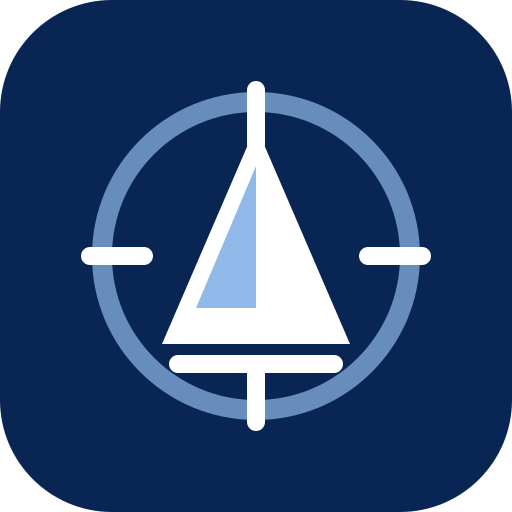

Нет соединения
ILKA не использует кэшированную проекцию как новый источник истины. Уже созданные offline-команды остаются в локальной очереди IndexedDB.
После восстановления связи приложение загрузит актуальную проекцию и продолжит синхронизацию.